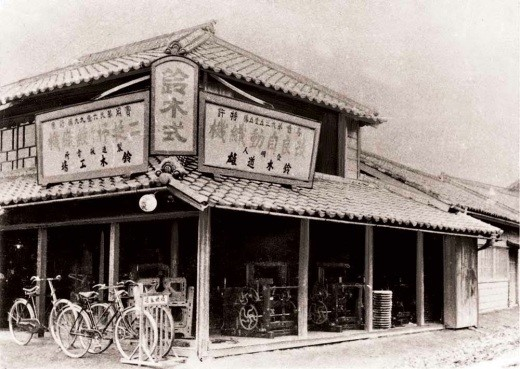
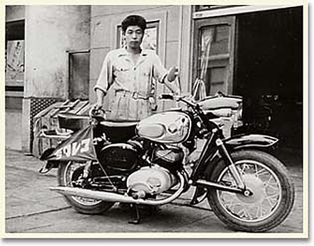
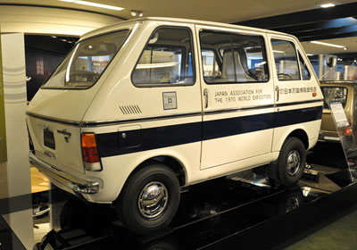
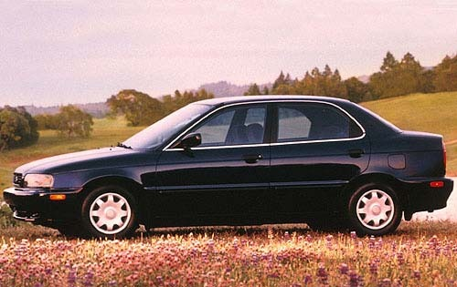
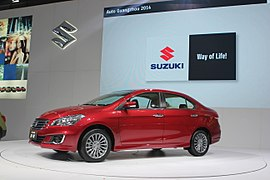
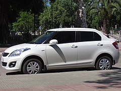
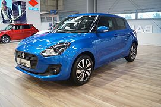
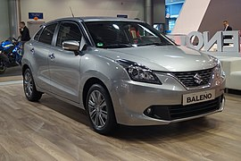
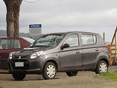

Resumen
Suzuki Motors Corporation es una empresa japonesa que está dedicada a la fabricación de automóviles pequeños (especialmente Keicars), motocicletas, motores fuera de borda, y una gran variedad de productos equipados con motores de combustión. Fue fundada en 1909 en la localidad de Hamamatsu, Japón, por Michio Suzuki.
Historia
La empresa fue creada por Michio Suzuki con el nombre inicial de “Suzuki Loom Works” en octubre de 1909, en la localidad de Hamamatsu, prefectura de Shizok, Japón. Suzuki tenía una mente brillante y visionaria, al igual que otros japoneses de su época en la industria del automóvil tales como Soichiro Honda, fundador de la firma que lleva su apellido; Kiichiro Toyoda, de Toyota; Yataro Iwasaki, de Mitsubishi, etc...
Inicialmente, Suzuki decide fundar su pequeña empresa para dedicarse a la fabricación de maquinaria textil, las cuales, a cabo de los años, gracias a su gran calidad y bajo precio, lograrían desplazar a las máquinas inglesas y alemanas que dominaban el mercado.
Lamentablemente, en 1951 el mercado del algodón quedó colapsado lo que perjudicó enormemente a las máquinas de Suzuki, y la compañía se vio obligada a desarrollar otras actividades y a ofrecer nuevos productos, entre los que podemos destacar; la fabricación de instrumentos musicales, la construcción de casas, maquinaria agrícola, herramientas, e incluso la motorización de bicicletas.
En 1952 ideó la bicicleta motorizada (Power Free) que estaba equipada con un motor 2x36cc. Ese mismo año la cifra de fabricación de su bicicleta motorizada ascendió a 6000 unidades. Esta bicicleta se hizo tan popular, que en 1954 se introdujo un segundo modelo.
En 1954 el nombre de la empresa fue cambiado por el de “Suzuki Motor Corporation”.
Finalmente, también deciden lanzarse de nuevo a la fabricación de automóviles, actividad que ya habían iniciado por primera vez en 1931 y que fue paralizada a petición del Gobierno del Japón que estimó que su vehículo era demasiado pequeño, incómodo e inseguro para los pasajeros.
En octubre de 1955 Suzuki introdujo su primer coche fabricado en serie, el Suzulight, con motorización de 2 cilindros, 2 tiempos y 360cc. que tendría muy buena acogida en Japón.
En 1961 se introduce el Carry Suzuligth, que fue su primer utilitario.
Durante los años setenta, también fue producido el modelo Fronte en sus diferentes versiones como los 360 o Viola.
En 1967, Japón ya vivía 2 décadas de reestructuración y reinserción en el panorama internacional y el país crecía aceleradamente ante la atónita mirada de occidente. Los vehículos japoneses ya habían probado su calidad, fiabilidad y robustez en la guerra de Corea, donde el Gobierno Nipón había tenido la misión de abastecer de jeep's a los Estados Unidos, con los siempre fieles vehículos de las marcas Toyota, Datsun y Mitsubishi, los cuales dejaron sorprendidos a las tropas de los Estados Unidos por su calidad en el frente de batalla. Desde ese momento el vehículo 4x4 japonés se expandiría por todos los lugares del mundo (prueba de ello es el Toyota Land Cruiser, para muchos el padre de los 4wd japoneses).
La "Suzuki Motor Co.", empezó las pruebas de fabricación de una minicamioneta rústica de doble tracción para la "Hope Motor Co.", saliendo de la cadena de montaje el primer ejemplar el 4 de abril de 1968, con un motor Mitsubishi de 359cc y 2 tiempos.
En 1969, y tras el poco éxito de ventas obtenido por esta minicamioneta llamada HOPESTAR OM-360 (de la cual se construyeron sólo 50 unidades, quedando 20 de ellas en Japón), Suzuki se empeña en el desarrollo de su primer vehículo de doble tracción, de tamaño reducido y motorización propia: El Jimny 360, también conocido como LJ10 o Suzuki Brute IV que vería la luz en 1970. Este sería el comienzo de una saga de pequeños, robustos y fiables vehículos que se expandirían por todo el mundo.
En 1985, Suzuki llegó a un acuerdo con la “General Motors” debido a la creciente demanda de coches pequeños. Con la ayuda de Isuzu (GM tenía participación en aquella época) fue introducido en Estados Unidos el Chevrolet Sprint (Suzuki Cultus en Japón).
También en 1985 introdujo en los estados Unidos el pequeño todoterreno Samurai (Jimny en Japón y SJ410/SJ413 en otros lugares) y se convertiría en el primer coche en los Estados Unidos vendido bajo la marca Suzuki.
En 1989 Suzuki rediseñó el Swift y presentó un nuevo todoterreno.
En 1995 Suzuki introdujo en América el Esteem sedan, que era un poco más grande y potente que el Swift, pero sus ventas fueron siempre modestas. La producción total de Suzuki alcanzó más de 975.000 coches ese año.
En 1996, para sustituir al Samurai, Suzuki presentó el X-90 convertible, un singular todoterreno Pick Up que solo se comercializó durante 3 años y que dejó de producirse en 1998. En 1999 fue sustituido por el Vitara y Gran Vitara. El Geo dejó de producirse en 1997, tras lo cual el Metro y el Tracker se vendieron como Chevrolet.
Después de 2001, el Swift/Metro, que por aquel entonces era el más vendido en América dejó de producirse. En 2002, el Esteem también dejó de producirse y fue sustituido por el Aerio.
En 2004, la “General Motors” comercializó los sedanes Daewoo Nubira y Daewoo Lacetti con la marca Suzuki, con las denominaciones de Forenza compact y Verona, que antes habían sido los Daewoo Magnus y Daewoo Leganza.
En 2005, el Forenza se versionó en estilos Wagon y Hatchback y se comercializó con el nombre de Reno. Suzuki planifica un nuevo SUV, el Gran Vitara/XL-7 que se comercializará a partir de 2006.
Automóviles
| Actuales |
|---|
| Vitara |
| Grand Vitara |
| Celerio |
| New Vitara |
| Ignis |
| Jimny |
| S-Cross |
| LJ80 |
| JLX |
| Fronte |
| Cement |
| Cervo |
| ST20K/V |
| ST30K/V |
| ST80K/V |
| ST90K/V |
| Ciaz |
| APV |
| Ertiga |
| Ertiga Dreza |
| Alto |
| Alto Juna |
| Equator |
| Lapin |
| Baleno |
| Esteem (Cultus) |
| Swift |
| Escud |
| Santana |
| SC 100 |
| Forenza |
| Escudo P. Peaks V |
| XL7 P. Peak Sp. |
| Wagon R+ |
| Palette |
| New Dzire |
Ejemplos de autos actuales hechos por Suzuki
   
| Anteriores |
|---|
| Maruti |
| Forsa |
| Aerio |
| Aerio SX |
| Liana |
| Super Carry |
| Carry |
| Mastervan |
| SJ |
| XL7 |
| Cappuccino |
| Fun |
| Kizashi |
| SX4 Hatchback |
| SX4 Sedan |